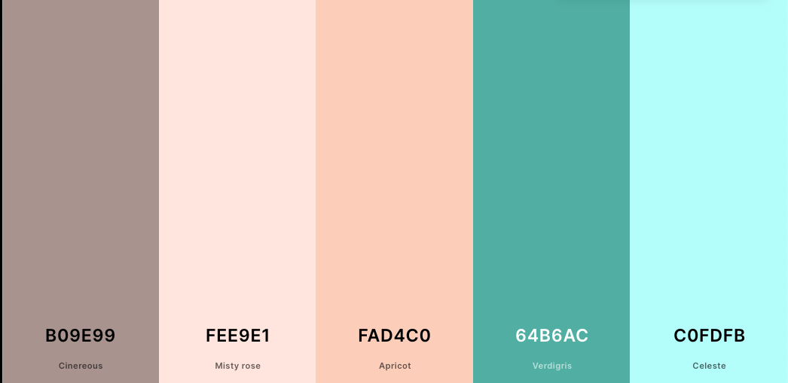

Overview
Purpose
The Currituck Chamber of Commerce serves the economic interests of Currituck County, North Carolina. We seek to promote small businesses and influence community development. We serve the needs of local residents as well as provide growth and prosperity to our local tourism industry.
Site Name
The site name for this website will be: Currituck Chamber of Commerce. This name represents the location of the chamber and the purpose of the site.
Audience and Scenarios
This site has two primary audiences: (1) the local businesses of Currituck County, North Carolina, and (2) the local residents of Currituck County, North Carolina. The majority of these audience members will access our website through mobile devices like cell phones and tablets. These audiences will be asking questions such as:
- How do I join the chamber?
- What businesses are currently involved with the chamber?
- What events are the chamber hosting over the next few months?
- Who do I contact for more information about the chamber?
Branding
Website Logo
Style Guide
Color Schema
The following colors were chosen to represent the beachy, relaxing vibe that is present in Currituck. This is what most tourists are attracted to in this area, so it is a great match for businesses that are seeking to promote tourism in this area.
Palette URL: https://coolors.co/b09e99-fee9e1-fad4c0-64b6ac-c0fdfb
| Primary | Secondary | Accent 1 | Accent 2 | Accent 3 |
|---|---|---|---|---|
| #64B6AC | #FEE9E1 | #C0FDFB | #FAD4C0 | #B09E99 |
Typography
Heading Font: Diphylleia, Regular 400
The heading font is professional, but also has a slightly relaxed feel to it.
Paragraph Font: Quicksand, Regular 400
The paragraph font is more easily readable than the headline font, but also produces a relaxed feel. It varies enough from the headline font to promote separation.